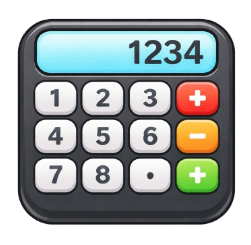

SOS Emergency
Send SOS alerts with your live location and start live tracking for 8 hours. After alerts are sent, the app also tries to call your top priority contact.

Fake Call
Schedule a fake incoming call after 30 seconds, 1 minute, or a custom delay. Customize the caller name and ringtone from Account.

Live Location
Open your current location in Google Maps and let the app use location for SOS, Nearby Places and live tracking.

Nearby Places
Find nearby police stations, hospitals and ATMs. If live search fails, the app shows your manually saved backup places for that category.

Safety Timer
Start a travel check-in with your destination and usual travel time. If you do not confirm safely after the main timer and 10 extra minutes, SOS goes to your top 4 contacts.

Emergency Siren
Tap the Emergency Siren card on the dashboard to instantly start a loud looping siren with a flashing warning screen. Tap the same card again to stop both.
Quick Helplines
Use the dashboard helpline buttons for fast calling. The app opens your dialer for 112, 100, 1091, 181 and 102.
Voice Trigger
Enable voice trigger on the dashboard to listen while the app is open. You can also keep SOS phrases on and siren phrases off, or the other way around.

Notes
Use Notes beside Change and Help to save quick details like a vehicle number, a location clue or a suspect description directly to your account.

Change
Use Change beside Help to open a normal working calculator screen. Long press the calculator display to return to the dashboard.

Emergency Contacts
Add emergency contacts, reorder them by priority, and call or message them directly. Priority 1 is treated as your primary contact during SOS.

Add Contact
Save contacts with name, phone, relation and email. These contacts are used for SOS alerts and priority ordering.

Your Account
Manage your profile, change your profile photo, update fake call customization, log out, or delete your account.
Frequently Asked Questions
? How does SOS work?
When you press SOS, the app starts live tracking, sends alert emails with your location and tracking link, and then tries to call your highest-priority contact.
? Is my data safe?
Your profile, contacts and saved nearby places are stored in Firebase for your account. Profile photo updates are also saved to your account.
? Can I use it without internet?
Fake Call and the Change calculator can still work without internet. SOS emails, nearby live places, and Firebase-synced data need internet.
? How do I add emergency contacts?
Go to Contacts, tap Add New Contact, fill in the details, and save. Then use the arrows in Contacts to set who should be Priority 1, 2, 3 and so on.
? How does Nearby Places work?
The app tries to fetch nearby police stations, hospitals and ATMs using your location. If that fails, it shows the places you saved manually with Google Maps links under the same category. The Police button in the bottom bar takes you straight to the police section.
? How does Safety Timer work?
Enter where you are going and how long you usually take to reach. When that timer ends, the app asks you to check in. If you still do not respond after 10 more minutes, SOS is automatically sent to your top 4 contacts.
? How does Emergency Siren work?
Tap the Emergency Siren card on the dashboard once to start the alarm and flashing warning screen. Tap the same card again, or the stop button on the flashing screen, to stop it.
? How do Quick Helplines work?
Tap any helpline button on the dashboard and the app opens your phone dialer with that number ready to call.
? How does Voice Trigger work?
Turn on Voice Trigger from the dashboard. While the app is open, phrases like "help", "help me", "sos" and "send location" trigger SOS, while phrases like "play sound", "play siren", "siren" and "police sound" start the siren. You can turn SOS phrases or siren phrases on and off separately.
? How do Notes work?
Tap Notes in the header, write any important details, and save them. The notes are stored in your account so you can keep updating them when needed.
? How does Change work?
Tap Change beside Help to open a real calculator screen. Long press the calculator display for about 2 seconds to return to the dashboard.
? How does Fake Call scheduling work?
Open Fake Call, choose 30 seconds, 1 minute or a custom time, then start it. The app returns you to the dashboard and shows the fake incoming call when the timer finishes while you are still inside this app.
? Can I change my profile picture?
Yes. Open Account and tap the profile image. Pick a photo and the app saves a compressed version to your account so it stays available after refresh.
? What happens when I log out or delete my account?
Log Out signs you out of the app. Delete Account permanently removes your account data and should only be used when you really want to erase it.